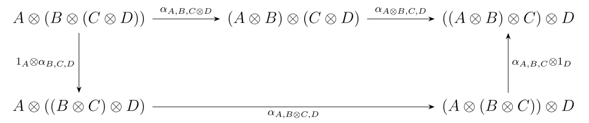
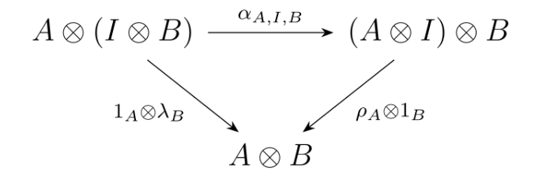
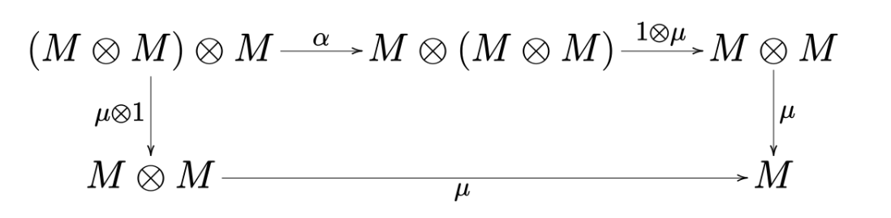
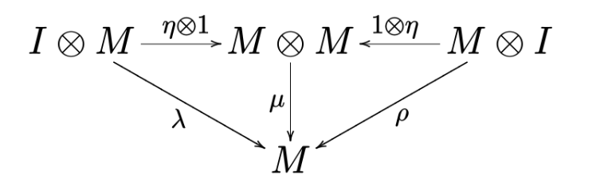
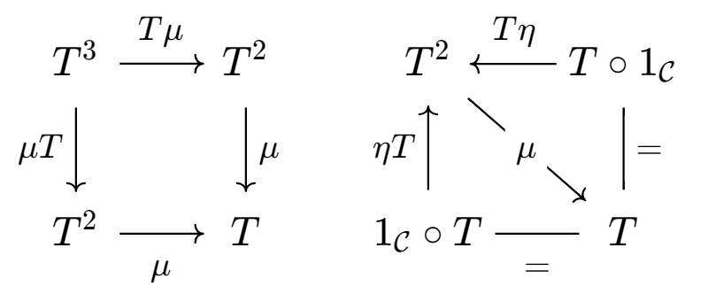

我明明在努力工作，却隔三岔五都会遇到歧视这份职业的人。他们的眼神里，有着对反驳的胆怯与警戒，有时候，还藏着一种 “你敢反驳我便应战” 的好战光芒。
原本以为熟练在 Haskell 中用 Monad 和 Monad transformer 了，结果发现阅读文献碰到时还是绕不开数学。
# 单位半群（Monoid）
这个相对简单，就是一个代数结构。当集合S 上存在一个二元运算∗:S×S→S 和一个单位元e∈S 满足：
-
∀a∈S,e∗a=a∗e=a.
-
∀a,b,c∈S,a∗(b∗c)=(a∗b)∗c.
那我们就称集合S 和这个运算、单位元形成了一个单位半群（幺半群，Monoid）
例：自态射形成了一个 Monoid。考虑一个 category C 中只有一个元素a 和很多 morphism，那么这些 morphism 都是从a 到a 的箭头，他们形成了一个 Monoid。其中S 就是这些 morphism，二元运算是 morphism 的组合，单位元是 identity morphism。由于 category 的性质，故满足结合律和单位律，故形成了一个 Monoid。
# Monoidal Category
A monoidal category is a category C quipped with a monoidal structure:
-
a bifunctor ⊗:C×C→C.
-
an object I called the monoid unit.
-
three natural isomorphisms:
-
for any three arguments A,B,C, there is a isomorphism α:
αA,B,C:A⊗(B⊗C)≅(A⊗B)⊗C
-
for any argument A, there are two isomorphisms:
λA:I⊗A≅AρA:A⊗I≅A
-
the three natural isomorphisms should satisfy the coherence conditions:
-
for all A,B,C,D∈C, the following diagram commutes:

-
for all A,B∈C, the following diagram commutes:

关于这个定义，可以说明几点。
-
这个 monoidal structure 里的元素（譬如单位元），都是 category C 里面的 object。也就是说我们希望这个 category 本身就有一点 monoid 的结构。但是它不是一个 monoid 在于，结合律和单位律都是同构而不是相等。譬如在 category Set 中，就是集合的同构而不是集合的相等。{(a,(b,c))} 和{((a,b),c)} 就是同构但不相等的。
-
其次下面的 coherence conditions 其实是，我们可以利用α 找出很多个诸如下面这种同构：
(((A1⊗A2)⊗A3)⊗...⊗An)≅(A1⊗(A1⊗(A3⊗...⊗An)))
因为你可以选择拆括号时不同的顺序，从而选择α 的不同的 arguments。coherence condition 就说明，这些同构都应该是同一个。
例：把 category Set 补充成一个 monoidal category。bifunctor 选择笛卡尔积，即A⊗B={(a,b)∣a∈A,b∈B}。然后 unit object 选择为一个特殊的单元素集{∗}。可以验证譬如{((1,2),3),((4,5),6)}≅{(1,(2,3)),(4,(5,6))}，以及{(1,∗),(2,∗)}≅{1,2} 这样有自然的 isomorphism 满足要求和 coherence condition。
# Monoid in monoidal category
下面我们定义，在一个 monoidal category 上自然导出一个 monoid：
A monoid (M,μ,η) in a monoidal category (C,⊗,I) is an object M together with two morphism μ,η:
- μ:M⊗M→M called multiplication.
- η:I→M called unit.
such that the diagram commutes:


例：考虑Set 是一个 monoidal category，那么我们选择其中一个 object，譬如M={0,1}。那么M⊗M={(0,0),(0,1),(1,0),(1,1)}。我们可以找到一个 morphism μ，即模 2 乘法：
μ(0,0)=0μ(0,1)=0μ(1,0)=0μ(1,1)=1
对于η，我们需要找到一个{∗}→{0,1} 的映射，很显然有两个选择。如果我们选择η∗=0 会怎样？那么第二个 diagram 将不 commute！因为I⊗M⟶η⊗1M⊗M⟶μM 就会有映射：(∗,1)↦(0,1)↦0，显然这和直接用消去映射λ(∗,1)=1 得到的结果不一样。
所以我们需要选择η∗=1，这样就满足了要求。这个例子也阐释了，我们是怎么利用已有的 monoidal category 中那些 monoid structure（即α,λ,ρ）构造一个 monoid 的。
# Monad
最终我们定义一个特殊情况：Monad is a monoid in the (monoidal) category of endofunctors.
考虑一个 category C，显然可以找到一个 category D：
- D 中的 object 是C→C 的 functor。
- D 中的 morphism 是 functor 之间的 natural transformation。
那么D 是一个 monoidal category：
- 对于两个 functor F,G∈D，F⊗G=F∘G∈D。
- I=1C 即C 上的 identity functor。
不难验证，这满足 monoidal category 的要求。实际上，D 是一个 strict monoidal category，因为根据 category 和 functor 的要求，实际上就有F∘(G∘H)=(F∘G)∘H，即不是同构而是直接相等。
那么我们就可以找出D 中的一个元素和两个 morphism，然后导出一个 monoid，即是 monad：
A Monad on C consists of an endofunctor T:C→C together with two natural transformations η:1C→T and μ:T∘T→T.
They are required to make the following diagram commutative:

显然T 是D 中的一个元素，而μ,η 也对应了导出 monoid 在 endofunctor category 下的情况。而特别的地方在于，由于 endofunctor category 是 strict monoidal category，那么α,λ,ρ 都是单位映射，即相等（因为在 category 里，要求了1C∘T=T∘1C=T）。所以图中省略了α 部分，把T∘(T∘T) 和(T∘T)∘T 直接合并了，而且在右图中将λ,ρ 改写为=。
例：我们仍考虑 category Set，那么 powerset 实际上就是一个 Monad。考虑一个 endofunctor T(A∈Set)=2A∈Set，那么我们可以定义ηA:1Set(A)→T(A) 为ηA(a∈A)={a}，譬如对于A={1,2,3}，那么A↦ηA{{1},{2},{3}}。
然后定义μA:T(T(A))→T(A) 其实就是把集合 flatten 一层。譬如对于A={{{1,2},{3,4}},{{5}}}，那么A↦ηA{{1,2,3,4},{5}}。这就形成了一个 Monad。
注意，实际上 functor T 应该不仅描述了 object 间的映射关系，还需要说明 morphism 间的映射关系。而Set 上的 morphism 是集合之间的函数，那么对于 powerset 这个T，一个很自然的映射就是把函数（譬如f(x)=x+1）apply 在 powerset 里的每个 set。